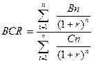
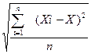

AECO241 :: Lecture 04 :: CREDIT ANALYSIS

4RS, 5CS AND 7PS OF CREDIT, REPAYMENT PLANS
The principles of farm finance are stated as ‘three Cs’, viz,
1) Character
2) Capacity, and
3) Capital.
The application of these principles facilitate largely the lending agencies, in the sense that the character of the borrower is a dominant factor for consideration before a lending agency decides to advance loan. Although the farm more net income, create good finance extended to a farmer may yield repaying capacity and buildup risk bearing ability he will not repay the loan unless he has good character. The second principle deals with the capacity of the borrower who not only produce more but also has to repay the loan in time. The third principle is intended to safeguard the interest of the lending agency. When the first two intangible assets prove inadequate during distress periods, the third, asset or capital will come to the rescue of the lending agency.
The principles of farm credit can also be stated as ‘three Rs'. They are:
i) Returns from the proposed investment,
ii) Repaying capacity
iii) Risk-bearing ability of the borrower
To find out the feasibility of a project or a scheme or a farm plan, these principles can the applied as economic feasibility tests.
i) Returns
The economic viability of a project indicates whether the proposed project is likely to contribute reasonable returns on the investment which in turn will lead to economic development of the farmer.
The economic viability can be measured by
1) Net Present Worth (NPW)
2) Benefit-Cost Ratio (BCR)
3) Internal Rate of Return (IRR)
1. Net Present Worth
The NPW of the project can be estimated using formula as given below:
Where,
Bn = Benefits in n'th Year.
Cn = Costs in n'th Year.
n = life span of the proect
i = interest or discount rate.
If the NPW of a project is positive, then it is considered that the project is economically feasible.
2. Benefit-Cost Ratio (BCR)
The BCR can be calculated using the following formula:

To compute the NPW and BCR, the opportunity cost of capital (normal/market lending rate) may be used as a discount rate. If the BCR is greater than 1, then it is worth wile to invest on the project.
IRR is that rate of discount which makes the present worth of benefits and costs equal or the net present worth of cash flow equal to zero. If IRR is greater than the opportunity cost of capital, the project is feasible.
ii) Repaying capacity
The repayment of loan depends on the amount of surplus income available with the farm household after providing some amount for the family expenses and pre-existing liabilities, besides keeping a margin for the risk factor. As the farming family is likely to get income from the farm business as well as from off-farm activities, the repaying capacity of the borrower should be judged by taking into account their total income.
The concept of repaying capacity can be expressed symbolically as:
Rc = ( (Y2-rf) + (Y1-rf) + Y) - ( (X2-X1) + Fe+OL)) ³ I+i
Where,
Rc = Repaying capacity
Y = Income from other sources.
Fe = Family expenses
OL = Other liabilities
rf = risk factor margin
I = Loan installment
i = interest on investment and working capital.
If the surplus is greater than or equal to loan installment plus interest, the borrower may be judged as having the capacity to repay the loan. If the surplus is more, the repayment period of loan may be reduced and it is less than (I+i) either the period for the repayment of loan may be extended or the project can be modified.
iii) Risk Bearing Ability
The beneficiaries of the project should have risk bearing ability (for repaying the loan amount promptly), ie., they should withstand the shocks of probable financial losses irrespective of the fact that the project appraisal has taken care of all precautions to prevent such losses. While the technical feasibility test reveals the productivity of the investment, the economic viability test indicated the returns to the investment. How far the beneficiaries of the project are having the capacity to repay the loan promptly is revealed by repaying capacity test. However, the farm income is subject to variations and it is essential to account for this variations in farm income. The output and price are the factors which determine the farm income fluctuations in output may be due to:
- Natural causes like floods, droughts, pests and diseases etc.
- Technical causes like break down of machinery, non-availability of inputs, availability of defective inputs etc.
- Social causes like theft, labour strike etc.
Fluctuation in prices is due to demand and supply factors besides lack of storage, transport and communication facilities, failure of government to control/regulate prices etc. The variation in farm income over a period of years is measured by coefficient of variation. The coefficient of variation is measured by the formula:
Where,
Standard Deviation (SD) = 
Estimation of Standard Deviation
Year |
Farm Income (Rs./year) (Xi) |
(Xi - X) |
(Xi - X)2 |
1988-89 |
4,600 |
-3,646 |
132,93,316 |
1989-90 |
6,150 |
-2,096 |
43,93,216 |
1990-91 |
7,900 |
-346 |
1,19,716 |
1991-92 |
9,880 |
1,634 |
26,69,956 |
1992-93 |
12,700 |
454 |
198,38,116 |
Total |
41,230 |
0 |
403,14,320 |
= 0.34 (or) 34.44%
Since the coefficient of variation is 34 percent for this farm, to determine the repaying capacity of the farmer, the gross income should be deflated by 34 percent. Suppose, if the farm income is Rs.10,000 and the coefficient of variation is 34 per cent, the real farm income is Rs.6,600 only.
7 Ps
The modern rural financing institutions have to follow principles of farm finance not only to achieve commercial gains but also to bring about social benefits. By the combination of principles of economics, banking and farm management along with the existing principles, the following principles of farm finance have been evolved, on the basis of the definition adopted for the concept of farm finance for development:
- Principle of Productive Purpose,
- Principle of Personality,
- Principle of Productivity,
- Principle of Phased disbursement,
- Principle of Proper utilization,
- Principle of repayment, and
- Principle of protection
1. Principle of Productive Purpose
While there is encouragement for production finance, consumption credit is discouraged at all levels. The CRAFICARD (1981) recommended consumption credit if it is meant to increase family labour productivity. Only the unproductive consumption credit needs such as loan for litigation, social functions, etc., of the farmers may be excluded from the purview of farm finance. The resource being scarce even for productive purposes, the most important and indispensable purpose should be served first. Though a scheme may be technically feasible, the economic viability, repaying capacity and risk bearing ability of the farmer should also be taken into consideration before accepting the scheme. Therefore, even among the productive purposes, the most important one like sinking of well or installation of pumpset may be considered on a priority basis for providing finance.
2. Principle of personality
This emphasizes that the criteria to extend farm finance is not only credit worthiness, but also trust-worthiness of the borrower. The farmer should be a man of character having entrepreneurship, capable of keeping up his promises, agreeable to adopt modern technology in farming and inclined to co-operate with the financing institutions in all aspects. One of the reasons attributed for the mounting overdues is the willful default of the borrowers, majority of whom are credit worthy-affluent farmers.
3. Principle of Productivity
In short, productivity can be defined as output per unit of input. Farm finance is used by a farmer to increase the 'marginal efficiency of capital' which is a ratio between increase in expected future returns of the investment and increase in the cost of investment. Farm finance aims not only at mere production, but also intends to increase the productivity of farm resources, viz., land, labour, capital and management. Apart from productive purpose for which the loan is disbursed and good character as emphasized under principle of personality, the economic returns that would be generated by the scheme is also very important. The economic viability of the scheme is measured by Benefit-cost ratio, Internal Rate of Return and Net Present Worth.
4. Principle of phased disbursement
The finance should be disbursed not only in time but also in a phased manner, because no project needs the entire finance at the initial stage itself. Phased disbursement enables the borrower to make use of the finance far the purpose far which it is granted and aids the financing institution to ensure the end-use of it. Disbursement has three facets, viz., i) disbursement in cash, ii) disbursement in kind and iii) disbursement to suppliers of inputs directly. The institution itself may supply the needed inputs such as seeds, fertilizers, pesticides, etc., to the farmers as is being done by co-operatives. A portion of the finance may also be disbursed to the farmer in cash to meet out labour expenses. In case of machinery the institution may directly make payments to the suppliers after receiving the margin money from the borrowers.
5. Principle of Proper Utilization
The finance so extended to a farmer should be utilized far the purpose far which it is granted. The finance should be put into optimum use through backward and forward linkages which need basic infrastructure and supervision. When finance is provided for the cultivation of crops, inputs like seeds, fertilizers, pesticides, labour, etc., must be made available to him in time. Apart from technical guidance for production, marketing facilities will help him to realise mare returns. Farmers also divert the finance to meet their urgent needs, as a result they could not generate adequate returns for loan repayment. Thus, proper appraisal of the overall financial needs of the farmer and adoption of supervisory credit system in farm financing operations will bring the desired results.
6. Principle of payment
This helps to draw proper repayment schedule and emphasizes how and when the finance extended to the farmer should be repaid. Unrealistic repayment plan makes the farmer become a defaulter, even though he may have good repaying capacity. The repayment schedule should synchronize with the time of generation of income from the project. The repayment should be drawn in such a way that the principle and interest can be repaid out of the incremental income generated from the project, after setting aside a portion to meet his family expenses.
7. Principle of protection
This emphasis that all possible precautions should be taken to safeguard the funds which the financing institutions lend to the farmers. Some of the safety measures taken are:
i) Insurance cover
Insurance cover is available for machines, animal husbandry projects and crops to some extent.
ii) Linking credit with marketing
Linking credit with marketing enables the financing institutions to ensure the end use of credit and to receive repayments regularly. A few examples are given below to indicate agencies with whom marketing arrangements can be made.
Finance for |
Tie-up arrangements with |
a) Growing sugarcane |
Sugar factories |
b) Growing crops |
Co-operative Marketing Societies. |
c) Growing coffee, tea, cardomom, rubber, etc. |
Respective commodity boards. |
d) Establishment of dairy unit |
Poultry Development Corporation. |
iii) Provision of infrastructure
One of the factors for the success of farm finance is the availability of infrastructural facilities like input supply, storage facilities, transport and communication facilities, good marketing system, availability of technical guidance, etc.
iv) Covering credit under small Loans Guarantee Scheme of DI and CGC
The loans extended to the weaker sections can be covered under small Loans Guarantee Scheme of Deposit Insurance and credit Guarantee Corporation (DI and CGC).
v) Taking Securities
Neither the secured loans are invariably repaid, nor the unsecured loans completely remain unpaid. However, as a measure of caution, the loans maybe secured by mortgage / hypothecation of assets. But no project need be rejected merely for want of security, if it is considered feasible.
Knowledge of these principles enables the lending agencies to arrive at a correct judgment of the project/ scheme, to assess the financial requirements of the farmers, to determine the risk involved in such financing and to evaluate the extent of benefit that accrues to the farmers.
| Download this lecture as PDF here |